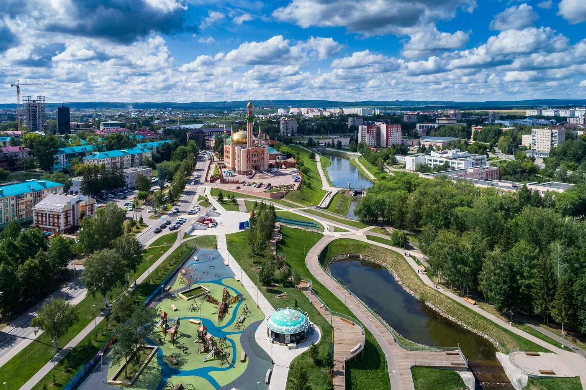

АВТОРСКИЙ КРАЕВЕДЧЕСКИЙ ПРОЕКТ · ӘЛМӘТ ШӘҺӘРЕ
ӘЛМӘТ
Альметьевск через объектив. Фотопутеводитель по местам, которые создают характер города. Выберите объект, чтобы узнать его историю и увидеть фотографии.

Места города
15 ИСТОРИЙ · 15 МАРШРУТОВ · ШӘҺӘР УРЫННАРЫ
Загрузка объектов…
Карта города
ШӘҺӘР КАРТАСЫ · ВСЕ ОБЪЕКТЫ НА КАРТЕ АЛЬМЕТЬЕВСКА
Нажмите на номер объекта, чтобы увидеть название и открыть страницу места.